|
Whole wheat breadmaking: Secrets of the masters made easy
The Best Recipes in the World
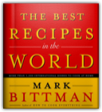
Mark Bittman
With his million-copy bestseller How to Cook Everything, Mark Bittman made the difficult doable. Now he makes the exotic accessible.In this highly ambitious, accomplished, globe-spanning work, Bittman gathers the best recipes that people from dozens of countries around the world cook every day. And when he brings his distinctive no-frills approach to dishes that were once considered esoteric, America's home cooks will eagerly follow where they once feared to tread. In more than a thousand recipes, Bittman compellingly demonstrates that there are many places besides Italy and France to which cooks can turn for inspiration. In addition to these favorites, he covers Spain, Portugal, Greece, Russia, Scandinavia, the Balkans, Germany, and other European destinations, giving us easy ways to make dishes like Spanish Mushroom and Chicken Paella, Greek Roast Leg of Lamb with Thyme and Orange, Russian Borscht, and Swedish Äppletorte. Asian food now rivals European cuisine’s popularity, and this book reflects that: It’s the first to emphasize European and Asian cuisines equally, with easy-to-follow recipes for favorites like Vietnamese Stir-Fried Vegetables with Nam Pla, Pad Thai, Japanese Salmon Teriyaki, Chinese Black Bean and Garlic Spareribs, and Indian Tandoori Chicken. Nor is the rest of the world ignored: there are hundreds of recipes from North Africa, the Middle East, and Central and South America, too. All will be hits with home cooks looking to add exciting new tastes and cosmopolitan flair to their everyday repertoire. Shop locally, cook globally–Mark Bittman makes it so easy: • Hundreds of recipes that can be made ahead or prepared in under 30 minutes • Informative sidebars and instructional drawings explain unfamiliar techniques and ingredients • Fifty-two international menus, an extensive International Pantry section, and much more make this an essential addition to any cook’s shelf The Best Recipes in the World is destined to be a classic that will change the way Americans think about everyday food. It’s simply like no other cookbook in the world. How to Cook Everything : Vegetarian Cooking
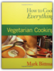
Mark Bittman, Alan Witschonke
Enjoy a meatless meal tonight!Black Bean Soup. Eggplant Lasagne. Lentils and Rice with Carmelized Onions. Delicious, nutritious, satisfying dishesthat are all vegetarian. With How to Cook Everything™: Vegetarian Cooking, even meat-eaters will love anything you serve! Mark Bittman, the award-winning author of the bestselling kitchen classic How to Cook Everything™, shares his favorite simpleand infinitely flexiblevegetarian recipes. You can prepare light and healthful lunches, hearty weeknight dinners, and even special-occasion feasts. In addition, to help you plan your meals, youll find Bittmans straight talk on cooking and special features, including: Creative recipe variations and ideasTips for shopping, preparing, and cooking the recipesIllustrations to demystify trickier techniquesMenu suggestions for an Italian Vegetarian Weeknight Dinner, a Vegetarian Party Buffet, and moreAt-a-glance icons highlighting vegan recipes Vegetables
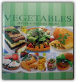
Bay Books
Presents a wide range of nutritional and cooking advice in relation to both the common and more exotic vegetables. Contains many well-illustrated vegetable recipes including salads, entrees, main courses and soups, hints on growing vegetables, and an index. One of the TBay Books Cookery Collection'.
The Fannie Farmer Cookbook: A Heritage of Good Cooking for a New Generation of Cooks
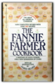
Marion Cunningham
Here is the great basic American cookbook—with more than 1,990 recipes, plain and fancy—that belongs in every household.Originally published in 1896 as The Boston Cooking-School Cook Book by Fannie Merritt Farmer, it became the coobook that taught generations of Americans how to cook. Completely updating it for the first time since 1979, Marion Cunningham made Fannie Farmer once again a household word for a new generation of cooks. What makes this basic cookbook so distinctive is that Marion Cunningham, who is the personification of the nineteenth-century teacher, is always at your side with her forthright tips and comments, encouraging the beginning cook and inspiring the more adventurous. She knows what today's cooks are looking for, and she has a way of instilling confidence and joy in the act of cooking. In giving the book new life, Mrs. Cunningham has been careful always to preserve the best of the old. She has retained all the particularly good, tried-and-true recipes from preceding editions, retesting and rewriting when necessary. She has rediscovered lost treasures, including delicious recipes that were eliminated when practically no one baked bread at home. This is now the place to find the finest possible recipes for Pumpkin Soup, Boston Baked Beans, Carpetbag Steak, Roast Stuffed Turkey, Anadama Bread, Indian Pudding, Apple Pie, and all of the other traditional favorites. The new recipes reflect ethnic influences—Mediterranean, Moroccan, Asian—that have been adding their flavors to American cooking in recent years. Tucked in among all your favorites like Old-Fashioned Beef Stew, New England Clam Chowder, Ham Timbales, and Chicken Jambalaya, you'll find her cool Cucumber Sushi, Enchiladas with Chicken and Green Sauce, or a layered dish of Polenta and Fish to add variety to your repertoire. Always a champion of old-fashioned breakfasts and delectable desserts, Mrs. Cunningham has many splendid new offerings to tempt you. Throughout, cooking terms and procedures are explained, essential ingredients are spelled out, basic equipment is assessed. Mrs. Cunningham even tells you how to make a good cup of coffee and how to brew tea properly. For the diet-conscious, there is an expanded nutritional chart that includes a breakdown of cholesterol and fat in common ingredients as well as in Fannie Farmer basic recipes. Where the taste of a dish would not be altered, Mrs. Cunningham has reduced the amount of cream and butter in some of the recipes from the preceding edition. She carefully evaluates the issues of food safety today and alerts us to potential hazards. But the emphasis here is always on good flavor, fresh ingredients, and lots of variety in one's daily fare, which Marion Cunningham believes is the secret to a healthy diet. Dedicated to the home cooks of America, young and old, this thirteenth edition of the book that won the hearts of Americans more than a century ago invites us all—as did the original Fannie Farmer—to cherish the delights of the family table. Daily Bread
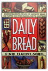
Cindi Flahive-Sobel
Fresh bread every day? A phenomenally successful baker shares her simple, satisfying recipes, along with her home-grown success story. The wonderful collection includes more than 50 recipes for yeast and quick breads, muffins, scones and other treats, many low in fat.
The Starving Students' Vegetarian Cookbook
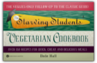
Dede Hall
This cookbook serves up simple, can't fail directions, cheap ingredients and quick one-pan recipes for the health conscious student.
Healthy Bread in Five Minutes a Day: 100 New Recipes Featuring Whole Grains, Fruits, Vegetables, and Gluten-Free Ingredients
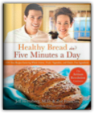
Jeff Hertzberg, Zoë François
With over 100,000 copies in print, Artisan Bread in Five Minutes a Day has proven that people want to bake their own bread provided they can do it easily and quickly. Knowing that people are changing the way they eat and bake because of health concerns or lifestyle choices, the authors took their established method and applied it to breads rich in whole grains, fruits, and vegetables. That is where Healthy Bread in Five Minutes a Day comes in. Health-conscious bread eaters need homemade options more than anyone else. They want delicious bread, but they can't find the healthy ingredients they'd like to use in traditional bakeries, or in traditional recipes. Whether you are looking for more whole grains, whether you're vegan, gluten-free, training for a triathlon, trying to reduced your cholesterol, or just care about what goes into your body, this book delivers. For all who discovered artisan bread through the first book and for health-conscious breadlovers everywhere, this book is a must-have. Includes Recipes for:• Whole Grain Pizza with Roasted Red Peppers and Fontina• Turkish-Style Pita Bread with Black Sesame Seeds• Cherry Tomato Baguette• Gluten-Free Rosemary Parmesan Bread Sticks• Spicy Chile Whole Grain Snack Crackers• Quinoa Bread• Pistachio Swirled Brioche The Moosewood Cookbook: Recipes from Moosewood Restaurant, Ithaca, New York
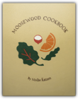
Mollie Katzen
Among the most influential cookbooks of our time, the Moosewood Cookbook is such a powerful symbol that the publishers were tempted not to tamper wi th it. But times have changed, and knowledge about the foods we eat and their nutritional value has increased. So, after many inquiries and requests, the author has revised many of her recipes to be lighter and healthier. Illustrated.
Quick Vegetarian Pleasures: More than 175 Fast, Delicious, and Healthy Meatless Recipes
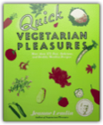
Jeanne Lemlin
More than 175 quick, wholesome, nutritious, and delicious recipes to be enjoyed by vegetarians and non-vegetarians alike.
Vegetarian Cooking for Everyone
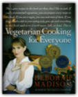
Deborah Madison
What Julia Child is to French cooking and Marcella Hazan is to Italian cooking, Deborah Madison is to contemporary vegetarian cooking. At Greens restaurant in San Francisco, where she was the founding chef, and in her two acclaimed vegetarian cookbooks, Madison elevated vegetarian cooking to new heights of sophistication, introducing many people to the joy of cooking without meat, whether occasionally or for a lifetime. But after her many years as a teacher and writer, she realized that there was no comprehensive primer for vegetarian cooking, no single book that taught vegetarians basic cooking techniques, how to combine ingredients, and how to present vegetarian dishes with style. Now, in a landmark cookbook that has been six years in the making, Madison teaches readers how to build flavor into vegetable dishes, how to develop vegetable stocks, and how to choose, care for, and cook the many vegetables available to cooks today.Vegetarian Cooking for Everyone is the most comprehensive vegetarian cookbook ever published. The 1,400 recipes, which range from appetizers to desserts, are colorful and imaginative as well as familiar and comforting. Madison introduces readers to innovative main course salads; warm and cold soups; vegetable braises and cobblers; golden-crusted gratins; Italian favorites like pasta, polenta, pizza, and risotto; savory tarts and galettes; grilled sandwiches and quesadillas; and creative dishes using grains and heirloom beans. At the heart of the book is the A-to-Z vegetable chapter, which describes the unique personalities of readily available vegetables, the sauces and seasonings that best complement them, and the simplest ways to prepare them. "Becoming a Cook" teaches cooking basics, from holding a knife to planning a menu, and "Foundations of Flavor" discusses how to use sauces, herbs, spices, oils, and vinegars to add flavor and character to meatless dishes. In each chapter, the recipes range from those suitable for everyday dining to dishes for special occasions. And through it all, Madison presents a philosophy of cooking that is both practical and inspiring. Despite its focus on meatless cooking, Vegetarian Cooking for Everyone is not just for vegetarians: It's for everyone interested in learning how to cook vegetables creatively, healthfully, and passionately. The recipes are remarkably straightforward, using easy-to-find ingredients in inspiring combinations. Some are simple, others more complex, but all are written with an eye toward the seasonality of produce. And Madison's joyful and free-spirited approach to cooking will send you into the kitchen with confidence and enthusiasm. Whether you are a kitchen novice or an experienced cook, this wonderful cookbook has something for everyone. Vegetarian Times Low-Fat & Fast
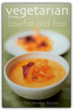
Maimonides, Vegetarian Times Magazine
Vegetarian Times Low-Fat and FastIf you've been searching for a cookbook to help you put delicious meatless meals on the table in a hurry, then look no further. The editors of Vegetarian Times magazine, the leading authorities on the vegetarian lifestyle, have compiled this delicious collection of 150 recipes, all of which can be prepared in 30 minutes or less. In fact, many of the recipes are easy enough to complete in just 15 or 20 minutes. Not just easy, all of the recipes in Vegetarian Times Low-Fat and Fast are low in fat, too. Of course, eating meatless meals is always healthful, but, as the Vegetarian Times editors explain, you still need to watch what you eat to stay fit and healthy. Light vegetarian cooking can be made simple by cutting back on eggs, using low-fat cheeses, sauteing with olive oil instead of butter, and trying healthy cooking techniques like grilling, broiling, roasting, and steaming, all of which bring out the best flavors in your food. Whether you're a longtime vegetarian or vegan looking for some exciting new and easy recipes to try, or a "part-time" vegetarian just trying to eat meatless meals a few times a week for better health, this is the book for you. Vegetarian Times Low-Fat and Fast is a timesaving cookbook that will make anyone, even beginner cooks, feel at home in the kitchen. Sample Recipes * Caribbean Bean Burgers * Sesame Broccoli * Mexican Lasagna * Vegan Caesar Salad * Black Bean Flautas * Pesto Mashed Potatoes * Tandoori-Style Chickpeas * Indonesian Fried Rice * Six Vegetable Couscous * Gingered Carrot Soup Smoothies !
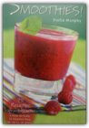
Stella Murphy
The Tao of Cooking
The New Laurel's Kitchen
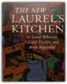
Laurel Robertson, Carol L. Flinders, Brian Ruppenthal
The complete cookbook and reference center for the whole-foods kitchen - over a million copies sold!The New Laurel's Kitchen is everything that made the first edition loved and trusted, with hundreds of new recipes and the latest nutritional information. • Over 500 recipes, ideas, menus, and suggestions, each tested and perfected for satisfying, wholesome home cooking • Imaginative use of low-cost, easy-to-find foods • Dozens of ways to cut back on fat without losting flavor • Revolutionary food guide that makes good nutrition easy • Sections on cooking for children, elders, pregnant moms, athletes • Practical applications of the latest in nutrition science The New Basics Cookbook
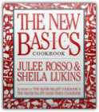
Julee Rosso, Sheila Lukins
It's the 1.8-million-copy bestselling cookbook that's become a modern-day classic. Beginning cooks will learn how to boil an egg. Experienced cooks will discover new ingredients and inspired approaches to familiar ones. Encyclopedic in scope, rich with recipes and techniques, and just plain fascinating to read, The New Basics Cookbook is the indispensable kitchen reference for all home cooks.This is a basic cookbook that reflects today's kitchen, today's pantry, today's taste expectations. A whimsically illustrated 875-recipe labor of love, The New Basics features a light, fresh, vibrantly flavored style of American cooking that incorporates the best of new ingredients and cuisines from around the world. Over 30 chapters include Fresh Beginnings; Pasta, Pizza, and Risotto; Soups; Salads; every kind of Vegetable; Seafood; The Chicken and the Egg; Grilling from Ribs to Surprise Paella; Grains; Beef; Lamb, Pork; Game; The Cheese Course, and Not Your Mother's Meatloaf. Not to mention 150 Desserts! Plus, tips, lore, menu ideas, at-a-glance charts, trade secrets, The Wine Dictionary, a Glossary of Cooking Terms, The Panic-Proof Kitchen, and much more. Main Selection of the Better Homes & Gardens Family Book Service and the Book-of-the-Month Club's HomeStyle Books. Enlightened Soups: More Than 135 Light, Healthy, Delicious and Beautiful Soups in 60 Minutes or Less
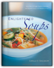
Camilla Saulsbury
With ENLIGHTENED SOUPS in hand, home cooks will have more than 150 quick, delicious, and innovative options from which to choose. From new takes on classics like chicken soup with herbed dumplings and Tuscan minestrone to innovations like butternut bisque with Gruyere croutons and Hanoi beef noodle soup, ENLIGHTENED SOUPS is filled with choices for any day of the week, any time of the year. Like all of the books in the Enlightened Cooking series, the recipes are straightforward, the ingredients commonly available, and the techniques geared toward the home cook. Every recipe includes a nutritional analysis, and at the back of the book, quick-search appendixes indicate which soups are especially low in fat (fewer than 3 grams per serving), especially low in calories (150 or less per serving), and especially low in total time required (from start to finish). The recipes are divided into pureed, meat, poultry, seafood, vegetable, and legume soups.
Pumpkin, a Super Food for All 12 Months of the Year
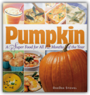
DeeDee Stovel
Pumpkin pie is just the beginning! These 125 recipes celebrate the varied ways that pumpkin can be used in everything from appetizers and snacks to soups, salads, main courses, side dishes, and desserts. You'll love every single one of Dee Dee Stovel's innovative creations, including Caribbean Black Bean Pumpkin Soup; Pumpkin Sage Risotto; Spring Spinach Salad with Strawberries and Pepitas; White Bean, Chicken, and Pumpkin Chili; Pumpkin Pizza with Gorgonzola Cheese; Pork Tenderloin with Red Wine Pumpkin Sauce; Lemon-Pumpkin Strudel; Chocolate-Pumpkin Brownies with Apricot Surprise; and seven deliciously different kinds of pumpkin pie.
Super Natural Cooking: Five Delicious Ways to Incorporate Whole and Natural Foods into Your Cooking
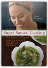
Heidi Swanson
Everyone knows that whole foods are much healthier than refined ingredients, but few know how to cook with them in uncomplicated, delicious ways. Using a palette of natural ingredients now widely available in supermarkets, Super Natural Cooking offers globally inspired, nutritionally packed cuisine that is both gratifying and flavorful. With her weeknight-friendly dishes, real-foodie Heidi Swanson teaches home cooks how to become confident in a whole-foods kitchen by experimenting with alternative flours, fats, grains, sweeteners, and more.Including innovative twists on familiar dishes from polenta to chocolate chip cookies, Super Natural Cooking is the new wholesome way to eat, using real-world ingredients to get out-of-this-world results.An inspiringly stylish introduction to nutritional superfoods, with an emphasis on whole grains, natural sweeteners, healthy oils, and colorful phytonutrient-packed ingredients.Features 80 recipes, a comprehensive pantry chapter, and 100 stunning full-color photos. Shows how to build a whole-foods pantry with nutrition-rich ingredients like almond oil, pomegranate molasses, and mesquite flour—each explained in detail.Winner of the 2005 Webby Award for best personal website, Heidi Swanson's recipe blog (www.101cookbooks.com) attracts close to 500,000 page views a month, making it one of the most widely read recipe journals online. The New Vegetarian Epicure: Menus—with 325 all-new recipes—for family and friends
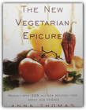
Anna Thomas
Anna Thomas, author of the best-selling The Vegetarian Epicure, which became the bible of vegetarian cooks in the seventies and remains a classic, now returns with an exuberant new cookbook that reflects the way we live and eat today. The 66 menus are geared to busy, health-conscious families who are drawn to good fresh foods and lighter fare, filled with the pungent ethnic flavors that Anna Thomas loves.Here are more than 325 recipes for every occasion, from seasonal family meals and little dinner parties to picnics and holiday feasts. For example: A Simple Autumn Dinner Party that includes a freshly made Focaccia, Lima Bean Soup, Torta di Polenta with a Roasted Tomato Sauce, and Parfaits of Fruit and Mascarpone A family meal of a Salad of Bitter Greens with Gorgonzola Cheese and Walnuts, Oyster Mushroom Chowder, Fast Buttermilk Rolls, and an Apple and Pear Crumble A celebratory Cinco de Mayo Dinner of Nopalito Salad, Tamales with Zucchini and Cilantro Filling, Chile Ancho Salsa, Garlic and Cumin Rice, and Flan with Caramel and Pineapple There are easy Salad Lunches, Soup Suppers, Pasta Dinners, Dinner in a Bowl, and A Casserole Supper—all foods that children love. And there are salad lunches for hot days, mezze (hearty little Middle Eastern dishes) for a crowd, a variety of teas, brunches, and a wine-tasting. Freshness is all-important to Anna Thomas, and she offers great tips about growing tomatoes, gathering wild mushrooms, and understanding chiles, as well as suggesting strategies for getting children to eat well. The captivating voice of Anna Thomas, which inspired a whole generation, is now even more irresistible as she persuades her contemporaries, pressured by all the demands of the day, to carve out a little time to prepare delicious, healthy meals and to experience the joy of sharing with family and friends the pleasure of the table. Vegetarian Times Low-Fat & Fast Asian
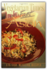
Editors of Vegetarian Times
The next book in the series of Low-Fat & Fast cookbooks from the editors of Vegetarian Times magazine is Vegetarian Times Low-Fat & Fast Asian. Asian cuisine is more popular than ever with stir-fries, noodle shops, Thai food, and sushi bars. But as several studies have shown, Chinese food is high in fat. With Vegetarian Times Low-Fat & Fast Asian, Asian food lovers can have their favorite dishes without the fat. Low-Fat & Fast Asian will be the first cookbook of its kind — a collection of all meatless Asian dishes. As with other books in this series, every dish will be easy enough to prepare in 20 to 30 minutes and will include a complete nutritional breakdown. Our on-going series with Vegetarian Times magazine includes Vegetarian Times Complete Cookbook, Vegetarian Times Beginner's Guide, and Vegetarian Times Vegetarian Entertaining.
|


My Library
Collection Total:
1320 Items
1320 Items
Last Updated:
Apr 14, 2013
Apr 14, 2013
 Made with Delicious Library
Made with Delicious Library